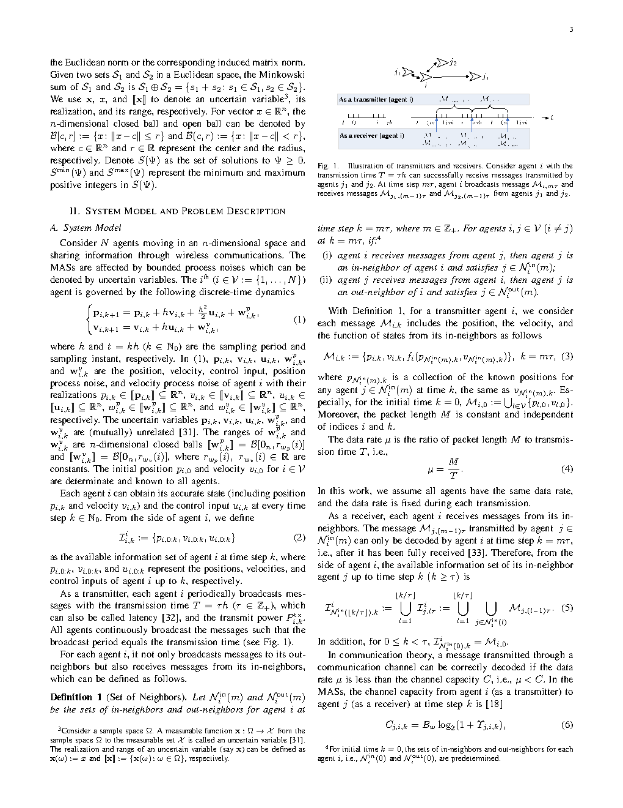
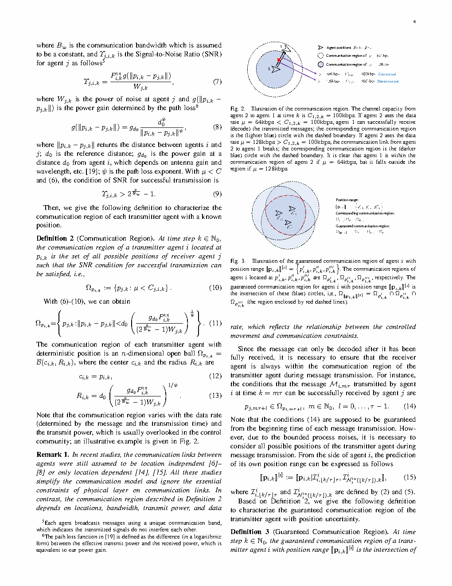
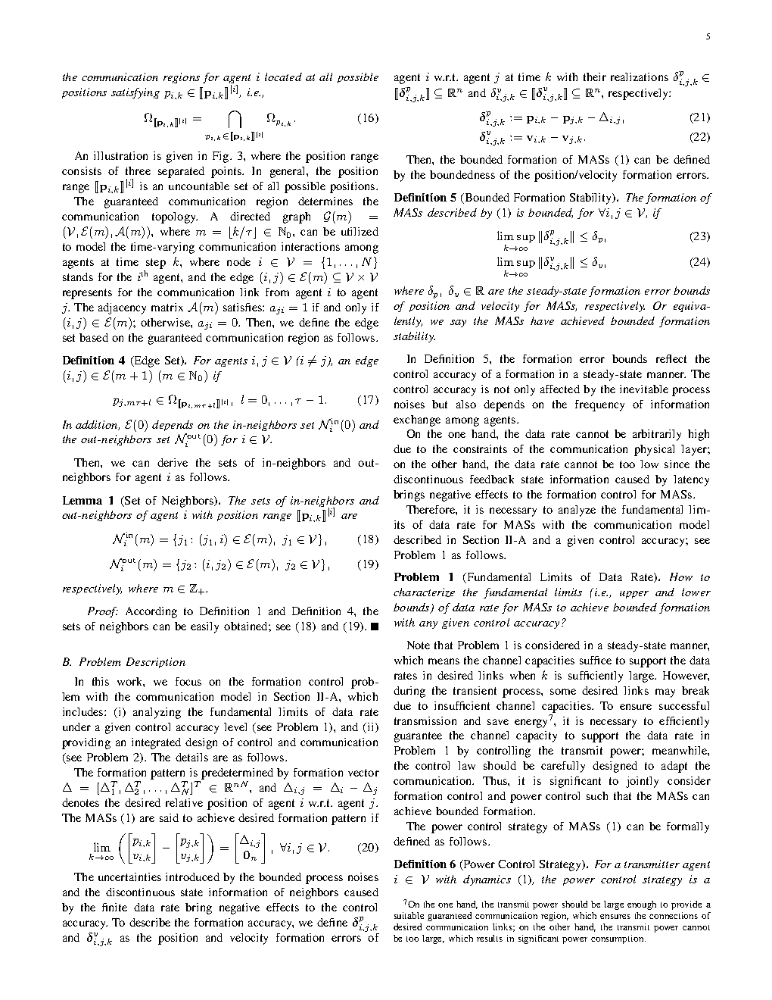

| Title | Formation Under Communication Constraints: Control Performance Meets Channel Capacity（通信约束下的编队控制：控制性能与信道容量的交汇） |
| Authors | Yaru Chen（陈雅茹）、Yirui Cong（从一睿）、Xiangyun Zhou、Long Cheng（程龙）、Xiangke Wang（王祥科） |
| Affiliation | 国防科技大学（NUDT）智能科学学院 / 中国科学院自动化研究所 / Australian National University（ANU） |
| Venue | arXiv preprint，2025年1月6日（已投稿期刊，under review） |
| DOI / Links | arXiv:2406.18961 | 首次提交：2024-06-27 | 更新：2025-01-06 |
| TL;DR | 提出 Guaranteed Communication Region (GCR) 概念——在存在过程噪声（如风扰动）导致智能体位置不确定的条件下，刻画"能够保证成功解码的全部可能位置集合"。核心贡献：（1）证明 GCR 不会随传输时间无限增大（因为位置不确定性也在增长）；（2）推导了达到给定编队精度所需的最小数据率下界（数据率定理的编队版本）；（3）提出估计-控制-功率联合设计方法。本质上是将 Shannon 信道容量、Nair-Evans 数据率定理和 set-membership 不确定性统一到编队控制框架中。 |
📎 本地材料：PDF 原文 | 关联论文：Paper 1348 — OIT（相同课题组 set-membership 方向）
| Inspiration Source | → What Insight It Inspired | Type |
|---|---|---|
| Shannon 信道容量定理（1948）—— $C = B\log_2(1+\text{SNR})$ | → 将经典点对点信道容量推广到位置不确定的场景：SNR 不再是确定值，而是由位置不确定集映射出的 SNR 区间。GCR = 使得"所有可能 SNR ≥ 阈值"的位置集 | 数学建模 |
| Nair & Evans (2004) 数据率定理——镇定线性系统需要的最小数据率 = $\sum \log_2|\lambda_i|$（不稳定特征值对数之和） | → 将"镇定一个系统"的数据率下界推广到"镇定一个编队"：编队精度 ε 对应一个可容许的最大编队误差集，要保证误差不超出此集合，数据率必须超过 $R_{\min}(\varepsilon)$。这个下界显式依赖于系统矩阵 A、噪声界 W 和拓扑 | 理论框架 |
| Set-membership filtering（集员滤波）——用集合而非点估计来刻画估计不确定性的最坏情况边界 | → 将集员滤波的"保证性"思想从估计域复制到通信域：不是问"通信成功的概率是多少"，而是问"在哪些位置上通信一定成功"。GCR 就是一种通信域的集员保证 | 方法论 |
| Cong 课题组 OIT 工作（Paper 1348）—— Observability-Informativity Trade-off | → GCR 与 OIT 共享同一个哲学前提：不确定性用有界集合刻画，结论是"保证性"的（对所有可能实现成立）。GCR 将这种哲学从单系统能观性-信息量权衡扩展到多智能体通信约束编队 | 研究纲领 |
flowchart TB
subgraph DYNAMICS["多智能体动力学层"]
AGENT_i["Agent i: 二阶积分器
p_i(k+1)=p_i(k)+T v_i(k)
v_i(k+1)=v_i(k)+T u_i(k)+T w_i(k)"]
NOISE["过程噪声 w_i(k) ∈ W
‖w_i‖ ≤ w_max · 有界但任意"]
POS_SET["位置不确定集 P_i(k)
由初始误差+噪声累积确定"]
end
subgraph COMM["无线通信层 (GCR框架)"]
CHANNEL["信道模型: r_ij = h_ij s_i + n_j
h_ij ∝ 1/d_ij^α · 路径损耗
AWGN: n_j ~ N(0,N_0)"]
SNR_EQ["SNR: γ_ij = P_i|h_ij|²/N_0
距离 d_ij 依赖位置→不确定"]
CAPACITY["C_ij = B log₂(1+γ_ij)
容量是位置函数"]
GCR["GCR_ij: 对所有可能的p_i,p_j
保证 SNR ≥ γ_th 的位置集
=最坏情况通信保证"]
end
subgraph CONTROL["编队控制层"]
EST["估计器: 从量化数据恢复邻居位置
p̂_j = decode(encode(p_j))"]
FORM_CTRL["u_i = K_p Σ(p̂_j-p̂_i-d_ij)
+ K_v Σ(v̂_j-v̂_i)
基于估计位置的PD型编队律"]
POWER_CTRL["发射功率控制: P_i 自适应
使GCR覆盖当前不确定集"]
FORM_ERROR["编队误差: e_k = [e_p; e_v]
目标: ‖e_k‖ ≤ ε"]
end
subgraph THEORY["理论保证"]
RATE_BOUND["数据率下界: R ≥ R_min(ε)
若R < R_min, 无法达精度ε"]
GCR_BOUND["GCR有界性:
lim_{T→∞}|GCR(T)| < ∞
传输时间不能无限扩大GCR"]
CONVERGENCE["闭环收敛:
编队误差渐进有界"]
end
AGENT_i --> NOISE --> POS_SET
POS_SET --> CHANNEL --> SNR_EQ --> CAPACITY --> GCR
GCR --> RATE_BOUND
GCR --> POWER_CTRL
POS_SET --> EST --> FORM_CTRL --> AGENT_i
POWER_CTRL --> CHANNEL
FORM_CTRL -.->|"反馈: 控制影响下一时刻位置"| POS_SET
FORM_ERROR --> CONVERGENCE
RATE_BOUND --> GCR_BOUND
classDef dynamics fill:#fef7ed,stroke:#f59e0b,stroke-width:2px,color:#92400e
classDef comm fill:#e8f0fe,stroke:#3b82f6,stroke-width:2px,color:#1d4ed8
classDef control fill:#f0ebfd,stroke:#8b5cf6,stroke-width:2px,color:#6d28d9
classDef theory fill:#e6f7ee,stroke:#10b981,stroke-width:2px,color:#047857
class AGENT_i,NOISE,POS_SET dynamics
class CHANNEL,SNR_EQ,CAPACITY,GCR comm
class EST,FORM_CTRL,POWER_CTRL,FORM_ERROR control
class RATE_BOUND,GCR_BOUND,CONVERGENCE theory
flowchart TB
subgraph INPUT["输入: 发送方不确定集"]
TX_POS["发送方 i 位置不确定集
P_i(k) = {p: ‖p-重心‖ ≤ r_i(k)}"]
RX_POS["接收方 j 位置不确定集
P_j(k)"]
end
subgraph GCR_BUILD["GCR 构建过程"]
POWER["发射功率 P_i 给定"]
PATHLOSS["对每个可能的 (p_i,p_j):
计算路径损耗 ∝ 1/‖p_i-p_j‖^α"]
SNR_MIN["min_{p_i∈P_i, p_j∈P_j} SNR(p_i,p_j)
= 最坏情况信噪比"]
CHECK["最坏SNR ≥ 解码阈值γ_th?
是→位置在GCR内
否→不在GCR内"]
end
subgraph OUTPUT["输出: GCR 性质"]
GCR_SHAPE["GCR_ij: 位置集合
(通常为环形或凸集)"]
GCR_SIZE["GCR大小有限
不随T无限增大"]
R_MIN["由GCR大小反推
所需数据率下界R_min"]
end
TX_POS --> POWER
RX_POS --> PATHLOSS
POWER --> PATHLOSS --> SNR_MIN --> CHECK --> GCR_SHAPE
GCR_SHAPE --> GCR_SIZE --> R_MIN
CHECK -.->|"控制误差反馈扩大P_i(k)"| TX_POS
classDef input fill:#fef7ed,stroke:#f59e0b,stroke-width:2px,color:#92400e
classDef build fill:#e8f0fe,stroke:#3b82f6,stroke-width:2px,color:#1d4ed8
classDef output fill:#e6f7ee,stroke:#10b981,stroke-width:2px,color:#047857
class TX_POS,RX_POS input
class POWER,PATHLOSS,SNR_MIN,CHECK build
class GCR_SHAPE,GCR_SIZE,R_MIN output
flowchart TD
subgraph INIT["阶段1: 任务设定"]
I1["期望编队构型: 给定d_ij"] --> I2["期望精度ε: 编队误差上界"] --> I3["系统参数: A矩阵·W噪声界·B带宽·N_0噪声功率"]
end
subgraph COMPUTE["阶段2: 理论计算"]
C1["计算数据率下界R_min(ε)"] --> C2["检查可用数据率R是否≥R_min"] --> C3["计算所需GCR大小·对应发射功率"]
end
subgraph EXECUTE["阶段3: 在线执行"]
E1["k时刻: 收集邻居估计p̂_j"] --> E2["计算控制量u_i(k)"] --> E3["更新不确定集P_i(k+1)"] --> E4["自适应调整发射功率P_i(k+1)"] --> E5["编码/量化位置信息→发送"]
end
subgraph MONITOR["阶段4: 监控与调整"]
M1["检查编队误差‖e_k‖"] --> M2{"‖e_k‖ ≤ ε?"}
M2 -->|"是"| M3["维持当前策略"]
M2 -->|"否"| M4["调整: 增功率/降速率/改拓扑"]
end
INIT --> COMPUTE --> EXECUTE --> MONITOR
E5 --> E1
M4 -.->|"反馈调整"| C3
M3 -.->|"稳定运行"| E1
classDef init fill:#fef7ed,stroke:#f59e0b,stroke-width:2px,color:#92400e
classDef comp fill:#e8f0fe,stroke:#3b82f6,stroke-width:2px,color:#1d4ed8
classDef exec fill:#f0ebfd,stroke:#8b5cf6,stroke-width:2px,color:#6d28d9
classDef mon fill:#ecfdf5,stroke:#10b981,stroke-width:2px,color:#047857
class I1,I2,I3 init
class C1,C2,C3 comp
class E1,E2,E3,E4,E5 exec
class M1,M2,M3,M4 mon
| 类别 | 内容 | 维度 |
|---|---|---|
| 输入 | 期望编队构型 $\{d_{ij}\}$；系统参数（采样周期 T、噪声界 $w_{\max}$、信道参数 B、$N_0$、路径损耗指数 $\alpha$）；通信拓扑 $\mathcal{E}$ | 编队几何、动力学、通信三方面 |
| 输出 | 每个智能体的控制律 $u_i(k)$（基于邻居位置估计的 PD 型编队律）+ 发射功率 $P_i(k)$（自适应调节） | 控制量 ∈ ℝ^d，功率 ∈ ℝ⁺ |
| 目标 | 编队误差的渐近上界 ≤ ε：$\limsup_{k \to \infty} \|e_k\| \le \varepsilon$，且满足最坏情况通信约束 | 保证性（对所有可能的噪声实现） |
| 理论输出 | 数据率下界 $R_{\min}(\varepsilon)$ + GCR 有界性证明 + 估计型控制器设计 + 功率控制策略 | 理论保证 + 算法设计 |
这是一个理论-算法联合型工作。在理论层面，它建立了一个新的分析框架（GCR），并在此框架下推导了三个定理（GCR 有界性、数据率下界、联合设计可行性）。在算法层面，它提出了具体的估计型编队控制器和自适应功率策略。与纯算法工作（"我们提出了一个新的控制器，实验效果好"）不同，本文的贡献首先是概念性的（GCR 这个思维工具），其次是理论性的（在 GCR 下的定理），最后才是算法性的（具体设计）。这种"概念→定理→算法"的三层递进是本课题组（Cong 组）论文的典型风格。
⚠ 表头用英文，正文用中文
| Prior Method | Core Idea | Why It Fails for This Problem |
|---|---|---|
| Consensus without Communication Constraints（完美通信下的编队/一致性控制） | 假设每对邻居之间可以无噪声、无延迟、无限精度地交换状态信息。经典结果：$u_i = -\sum_{j \in N_i} (x_i - x_j - d_{ij})$ 保证编队 | 完全不考虑通信——假设带宽无限、距离不影响信道。在 UAV 编队中，距离越远信噪比越低，这是物理现实。忽视它意味着理论保证在实际中不成立：当无人机拉开距离后可能失联。 |
| Quantized Consensus（量化一致性，Kashyap et al. 2007; Carli et al. 2010） | 信息经过量化器传输（如对数量化器），分析量化对一致性精度的影响。证明了量化一致性只能达到有界误差而非渐近零 | 隐含假设量化器固定，不分析数据率和信道容量的关系。没有回答"为什么是这个数据率"和"如果信道变差会发生什么"。缺少从信道容量到控制精度的传递函数。 |
| Event-Triggered Control（事件触发控制，Dimarogonas et al. 2010; Nowzari et al. 2019） | 只在状态变化超过阈值时才通信，减少通信次数。本质上是"用更少的通信实现相同的控制性能" | 不考虑信道容量——假设每次通信都是完美的（一旦触发就成功传输）。但通信的成败取决于信道质量（距离、功率、噪声），而事件触发控制只决定"什么时候通信"、不决定"通信是否成功"。在信道条件差的场景，即使触发了也可能传不过去。 |
| Classical Formation Control（经典编队控制：leader-follower, virtual structure, behavior-based） | 设计控制律使多智能体收敛到期望队形。通常假设"邻居信息已知"——通过通信或感知 | 与第一条相同——通信被假设为完美的黑箱。实际 UAV 编队中，通信往往是瓶颈：带宽有限、距离依赖、有丢包。"完美通信"假设下得到的高增益控制器在实际中可能导致通信崩溃。 |
| This Paper (GCR Framework) | 将信道容量显式建模为位置函数（距离依赖），用 GCR 刻画所有"保证解码"的位置集合，推导数据率下界并联合设计 | 首次将控制不确定性（位置不确定集）、信道容量（距离依赖的 Shannon 公式）和编队精度要求放在统一数学框架中，建立了从"噪声界"到"所需数据率"的完整传递链。 |
本文的方法论核心是三层递进：(A) 建立系统模型（动力学 + 通信），引入 GCR 概念 → (B) 在 GCR 框架下证明两个基本定理（有界性 + 数据率下界）→ (C) 基于定理指导设计联合估计-控制-功率方案。这不是一个"先有算法再分析"的路径，而是"先建立理论框架，算法作为框架的自然产物"。
LaTeX rendered by MathJax. 显示公式用 $$...$$，行内公式用 $...$。⚠ 符号解释请用中文。
| 参数 | 含义 | 在系统中的角色 | 设计中的约束/权衡 |
|---|---|---|---|
| $T$（采样周期） | 离散控制的时间步长 | 决定噪声累积速率；T 越大 → 每个时间步的噪声能量越大 | 短 T → 通信负担重（频繁传输）；长 T → 噪声累积大。需平衡 |
| $w_{\max}$（过程噪声界） | $\|w_i(k)\| \le w_{\max}$ | 噪声界直接决定位置不确定集的膨胀速度 | 噪声越大 → $R_{\min}$ 越大 → 需要更多通信资源。体现环境复杂度 |
| $\alpha$（路径损耗指数） | 信号衰减 $\propto 1/d^\alpha$ | 决定距离对 SNR 的影响强度；$\alpha$ 越大 → 对距离越敏感 | 自由空间 $\alpha=2$，城市环境 $\alpha=3\sim4$；$\alpha$ 越大编队间距越受限 |
| $B$（带宽） | 通信可用带宽（Hz） | 直接缩放信道容量 $C = B\log_2(1+\text{SNR})$ | 带宽受限 → 容量受限 → 数据率受限 → 编队精度受限 |
| $N_0$（噪声功率谱密度） | 接收端热噪声强度 | 决定了 SNR 的分母 | $N_0$ 大 → 需要更大发射功率或更近编队距离 |
| $K_p, K_v$（控制增益） | 编队 PD 控制器的增益 | 决定收敛速度和稳态精度 | 增益大 → 收敛快但量化误差放大 → 可能不稳定 |
| $\varepsilon$（期望编队精度） | 编队误差的上界目标 | 目标越严格（$\varepsilon$ 小）→ 所需 $R_{\min}$ 越大 | 工程权衡：精度 vs 通信代价 |
理解本文需要掌握四个关键原理：（1）为什么位置不确定性使通信分析变难；（2）GCR 如何提供集合保证；（3）为什么 GCR 会饱和；（4）编队控制的信息论下界。以下逐一深入拆解。
这个传播链的关键洞察是：不确定性从控制域"泄漏"到通信域是通过距离这个物理量完成的。距离 $d_{ij}$ 是控制（决定位置）和通信（决定 SNR）的共享变量。任何对 $d_{ij}$ 的不确定性都会同时影响控制和通信——这解释了为什么分离式设计必然失败：控制工程师假设 $d_{ij}$ 已知（因为"我控制了位置"），通信工程师也假设 $d_{ij}$ 已知（因为"我可以测量距离"），但实际上 $d_{ij}$ 对双方都是部分已知的（知道一个集合，不知道确切值）。
📷 论文原图截图。图片保存至 figures/ 子目录。命名 fig1.png ~ fig3.png 即可自动显示。

📷 请将截图保存为figures/fig1.png本图展示了：GCR 的几何构造过程。图中包含：(1) 发送方 i 的位置不确定集 $\mathcal{P}_i$（阴影椭圆/圆盘——表示由于过程噪声，智能体 i 可能位于该集合内的任意一点）；(2) 接收方 j 的位置不确定集 $\mathcal{P}_j$（另一个阴影区域）；(3) 解码 SNR 阈值对应的"理想通信半径"（如果没有不确定性时，在半径内的位置都能通信）；(4) GCR（加粗边界区域——理想半径减去不确定集扩张后的"最坏情况安全区域"）。

📷 请将截图保存为figures/fig2.png本图展示了：多个智能体在 GCR 框架下的编队收敛过程。通常包含：(a) 初始位置分散（随机分布或预设初始位置）；(b) 中间过渡状态——智能体逐渐向期望编队构型移动；(c) 最终收敛状态——形成目标队形并稳定维持。虚线圆圈表示每个智能体的 GCR 范围，箭头表示每个时刻的通信连接（只有在对方 GCR 内才建立连接）。

📷 请将截图保存为figures/fig3.png本图展示了：论文揭示的四个关键 trade-off 关系。(a) 数据率 vs 编队精度：横轴为数据率 R，纵轴为可达到的编队精度 ε——曲线单调递减（数据率越高，可达精度越高），但在 $R < R_{\min}$ 处存在垂直渐近线（低于该数据率无法达到任何有限精度）。(b) 传输时间 vs GCR 大小：横轴为传输时间 T，纵轴为 GCR 范围——曲线先上升后饱和（验证了 GCR 有界性定理）。(c) 发射功率 vs GCR 大小：横轴为发射功率 $P_i$，纵轴为 GCR 范围——单调递增但边际收益递减。(d) 智能体数量 vs 每智能体数据率：当智能体共享有限频谱时，增加智能体数量会减少每个智能体的可用数据率。
| 数据/假设问题 | 潜在困难 | 严重程度 |
|---|---|---|
| $w_{\max}$ 估计不准（噪声界低估） | GCR 被高估（以为覆盖够了，实际不够）→ 通信失败 → 控制链断裂 → 编队瓦解。这是"保证性"框架的阿喀琉斯之踵——如果最坏情况边界设错了，整个保证体系就崩溃了 | ★★★★★ |
| 多径/阴影效应忽略 | AWGN+路径损耗是大尺度平均模型。在实际环境中（尤其是城市/森林低空），小尺度衰落可能导致瞬时 SNR 远低于平均值 → 即使距离在 GCR 内，瞬间深衰落也可能导致解码失败。需要用"中断容量"而非"遍历容量"来定义 GCR | ★★★★ |
| 互干扰（多智能体同时发送） | GCR 定义只考虑一对(i,j)之间的 SNR，忽略了其他智能体的同频干扰。在密集编队中，干扰可能成为比噪声更严重的问题 → GCR 需要推广为"满足 SINR ≥ 阈值的位置集" | ★★★ |
| 位置不确定集的计算复杂度 | 精确的 Minkowski 和/差在高维空间中是 NP 难的。实际的 GCR 计算需要用外包椭圆/多面体来近似——近似的保守性可能导致 GCR 被严重低估（实际可以通信但被认为不行） | ★★★ |
| 信道状态信息（CSI）的可用性 | 功率控制需要知道信道增益 $h_{ij}$ 才能计算 SNR。但 $h_{ij}$ 本身也需要通过信道估计获得——而信道估计的质量又依赖于 SNR（鸡生蛋蛋生鸡）。在实际系统中，只能使用"估计的信道增益"而非"真实信道增益" | ★★ |
| 参考文献 | 为什么重要 |
|---|---|
| Nair & Evans (2004) — Stabilizability with finite data rates from topological feedback. Automatica 40(4), 613-627 | 数据率定理的经典文献——证明了镇定一个线性系统所需的最小数据率 = 所有不稳定特征值的对数之和。这是本文定理 2 的直接理论基础。理解这篇文章才能理解本文为什么把"编队精度下界"表达为依赖 $\rho(A)$ 的形式。 |
| Shannon (1948) — A mathematical theory of communication. Bell System Technical Journal 27, 379-423 | 信息论的奠基之作——信道容量定理 $C = B\log_2(1+\text{SNR})$ 的来源。本文的通信模型直接使用 Shannon 容量，但其核心创新在于将"点对点已知信道"推广到"位置不确定的集合信道"。 |
| Cong et al. — OIT paper (Paper 1348)，同课题组 | OIT 建立了集员意义下的"估计精度 vs 信息量" trade-off。GCR 将这一哲学从单系统估计扩展到多智能体通信——可以认为是 OIT 在通信域的对应物。两篇论文一起构成了 set-membership 方法在控制-估计-通信领域的应用体系。 |
| Olfati-Saber, Fax & Murray (2007) — Consensus and cooperation in networked multi-agent systems. Proc. IEEE 95(1), 215-233 | 多智能体一致性/编队控制的经典综述——建立了"通信拓扑的代数连通性"与"编队收敛速度"之间的联系。本文可以看作是在此基础上加入了物理通信约束（无线信道容量）后对"收敛"概念的重新定义（不再要求完美收敛，而是有界误差）。 |
| Gupta & Kumar (2020) — Networked control systems: Theory and applications. Book/综述 | 网络化控制系统的全面综述——涵盖了量化、丢包、延迟和信道约束。本文的贡献在于将"信道容量与距离的物理关系"引入 NCS 编队问题，而不只是将信道视为黑箱比特管道。 |